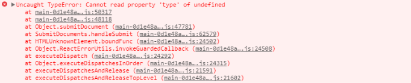
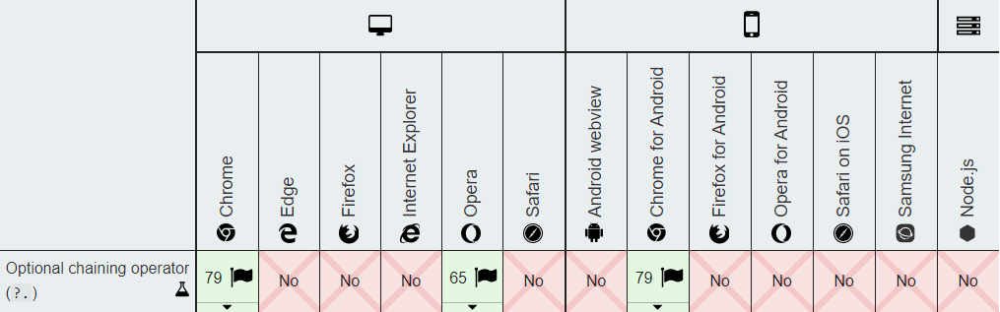
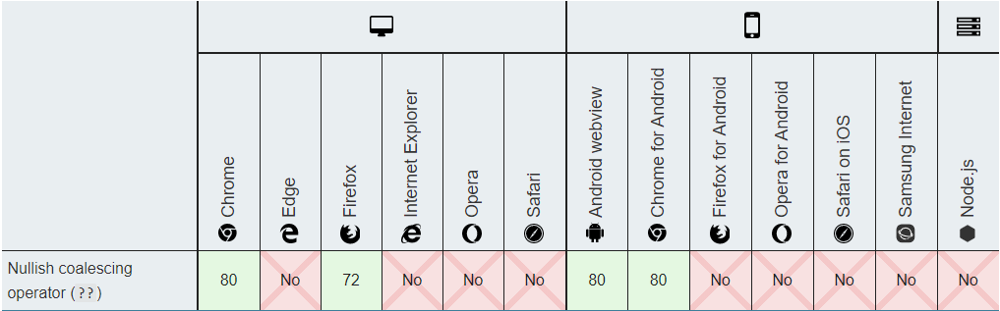
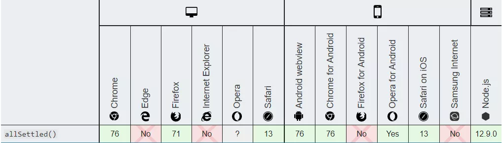
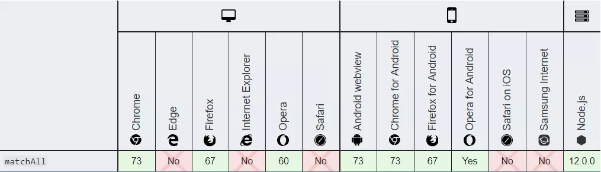
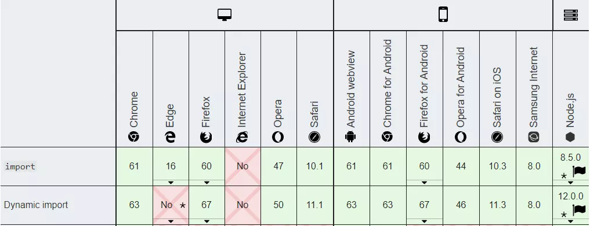
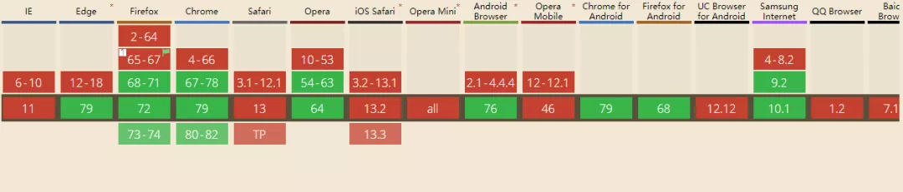
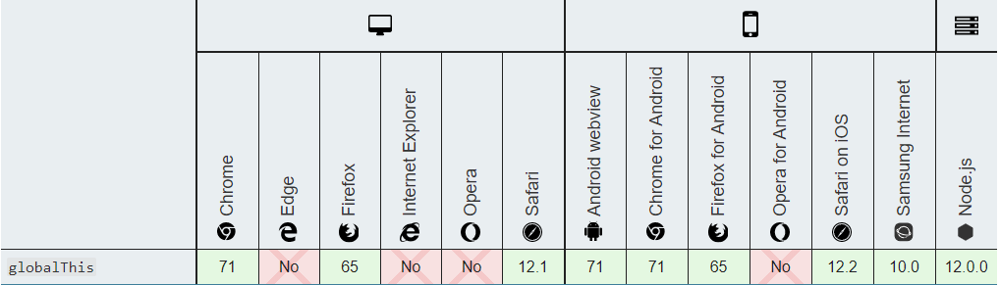

<!DOCTYPE html>


<html lang="zh-CN">


<head>
  <meta charset="utf-8" />
   
  <meta name="keywords" content="翟天野 天野 翟天野博客 tianye zhaitianye" />
   
  <meta name="description" content="The seeker of the world" />
  
  <meta name="viewport" content="width=device-width, initial-scale=1, maximum-scale=1" />
  <title>
    ES2020新特性 |  Tianye Blog
  </title>
  <meta name="generator" content="hexo-theme-ayer">
  
  <link rel="shortcut icon" href="/favicon.ico" />
  
  
<link rel="stylesheet" href="/dist/main.css">

  
<link rel="stylesheet" href="/comm/remixicon.min.css">

  
<link rel="stylesheet" href="/css/custom.css">

  
  
<script src="/comm/pace.min.js"></script>

  
  

  
<script>
var _hmt = _hmt || [];
(function() {
	var hm = document.createElement("script");
	hm.src = "https://hm.baidu.com/hm.js?a65f4359920e6c4b5b2b6d0519751045";
	var s = document.getElementsByTagName("script")[0]; 
	s.parentNode.insertBefore(hm, s);
})();
</script>


</head>

</html>

<body>
  <div id="app">
    
      
      <canvas width="1777" height="841"
        style="position: fixed; left: 0px; top: 0px; z-index: 99999; pointer-events: none;"></canvas>
      
    <main class="content on">
      <section class="outer">
  <article
  id="post-ES2020新特性"
  class="article article-type-post"
  itemscope
  itemprop="blogPost"
  data-scroll-reveal
>
  <div class="article-inner">
    
    <header class="article-header">
       
<h1 class="article-title sea-center" style="border-left:0" itemprop="name">
  ES2020新特性
</h1>
 

    </header>
     
    <div class="article-meta">
      <a href="/2020/08/ES2020%E6%96%B0%E7%89%B9%E6%80%A7/" class="article-date">
  <time datetime="2020-08-07T12:30:28.000Z" itemprop="datePublished">2020-08-07</time>
</a> 
  <div class="article-category">
    <a class="article-category-link" href="/categories/JavaScript/">JavaScript</a>
  </div>
  
<div class="word_count">
    <span class="post-time">
        <span class="post-meta-item-icon">
            <i class="ri-quill-pen-line"></i>
            <span class="post-meta-item-text"> 字数统计:</span>
            <span class="post-count">2.1k</span>
        </span>
    </span>

    <span class="post-time">
        &nbsp; | &nbsp;
        <span class="post-meta-item-icon">
            <i class="ri-book-open-line"></i>
            <span class="post-meta-item-text"> 阅读时长≈</span>
            <span class="post-count">8 分钟</span>
        </span>
    </span>
</div>
 
    </div>
      
    <div class="tocbot"></div>


  
    <div class="article-entry" itemprop="articleBody">
       
  <h2 id="前言"><a href="#前言" class="headerlink" title="前言"></a>前言</h2><p>ES2020 是 ECMAScript 对应 2020 年的版本。这个版本不像 ES6 (ES2015)那样包含大量新特性。但也添加了许多有趣且有用的特性。</p>
<p>本文以简单的代码示例来介绍 ES2020新特性。这样，你可以很快理解这些新功能，而不需要多么复杂的解释。</p>
<h2 id="可选链操作符（Optional-Chaining）"><a href="#可选链操作符（Optional-Chaining）" class="headerlink" title="可选链操作符（Optional Chaining）"></a>可选链操作符（Optional Chaining）</h2><p>可选链 可让我们在查询具有多个层级的对象时，不再需要进行冗余的各种前置校验。</p>
<p>日常开发中，当需要访问嵌套在对象内部好几层的属性时，可能就会得到臭名昭著的错误Uncaught TypeError: Cannot read property…，这种错误，让整段程序运行中止。</p>
<p></p>
<p>于是，你就要修改你的代码来处理来处理属性链中每一个可能的undefined对象，比如：</p>
<figure class="highlight js"><table><tr><td class="gutter"><pre><span class="line">1</span><br></pre></td><td class="code"><pre><span class="line"><span class="keyword">let</span> nestedProp = obj &amp;&amp; obj.first &amp;&amp; obj.first.second;</span><br></pre></td></tr></table></figure>

<p>在访问 obj.first.second 之前，要先确认 obj 和 obj.first 的值非 null(且不是 undefined)。</p>
<p>有了可选链式调用 ，可以大量简化类似繁琐的前置校验操作，而且更安全：</p>
<figure class="highlight js"><table><tr><td class="gutter"><pre><span class="line">1</span><br></pre></td><td class="code"><pre><span class="line"><span class="keyword">let</span> nestedProp = obj?.first?.second;</span><br></pre></td></tr></table></figure>

<p>如果obj或obj.first是null/undefined，表达式将会短路计算直接返回undefined。</p>
<p>可选链操作符的支持情况：</p>
<p></p>
<h2 id="空位合并操作符（Nullish-coalescing-Operator）"><a href="#空位合并操作符（Nullish-coalescing-Operator）" class="headerlink" title="空位合并操作符（Nullish coalescing Operator）"></a>空位合并操作符（Nullish coalescing Operator）</h2><p>当我们查询某个属性时，经常会给没有该属性就设置一个默认的值，比如下面两种方式：</p>
<figure class="highlight js"><table><tr><td class="gutter"><pre><span class="line">1</span><br><span class="line">2</span><br></pre></td><td class="code"><pre><span class="line"><span class="keyword">let</span> c = a ? a : b <span class="comment">// 方式1</span></span><br><span class="line"><span class="keyword">let</span> c = a || b <span class="comment">// 方式2</span></span><br></pre></td></tr></table></figure>

<p>这两种方式有个明显的弊端，它都会覆盖所有的假值，如(0, ‘’, false)，这些值可能是在某些情况下有效的输入。</p>
<figure class="highlight js"><table><tr><td class="gutter"><pre><span class="line">1</span><br><span class="line">2</span><br><span class="line">3</span><br><span class="line">4</span><br><span class="line">5</span><br><span class="line">6</span><br><span class="line">7</span><br></pre></td><td class="code"><pre><span class="line"><span class="keyword">let</span> x = &#123;</span><br><span class="line">  profile: &#123;</span><br><span class="line">    name: <span class="string">'XXX'</span>,</span><br><span class="line">    age: <span class="string">''</span></span><br><span class="line">  &#125;</span><br><span class="line">&#125;</span><br><span class="line"><span class="built_in">console</span>.log(x.profile.age || <span class="number">18</span>) <span class="comment">//18</span></span><br></pre></td></tr></table></figure>
<p>上例中age的属性为空字符串，却被等同为假值，为了解决这个问题，ES2020诞生了个新特性–空位合并操作符，用 ?? 表示。如果表达式在??的左侧运算符求值为 undefined 或 null，就返回其右侧默认值。</p>
<figure class="highlight js"><table><tr><td class="gutter"><pre><span class="line">1</span><br><span class="line">2</span><br></pre></td><td class="code"><pre><span class="line"><span class="keyword">let</span> c = a ?? b;</span><br><span class="line"><span class="comment">// 等价于let c = a !== undefined &amp;&amp; a !== null ? a : b;</span></span><br></pre></td></tr></table></figure>

<p>例如有以下代码：</p>
<figure class="highlight js"><table><tr><td class="gutter"><pre><span class="line">1</span><br><span class="line">2</span><br><span class="line">3</span><br><span class="line">4</span><br><span class="line">5</span><br><span class="line">6</span><br></pre></td><td class="code"><pre><span class="line"><span class="keyword">const</span> x = <span class="literal">null</span>;</span><br><span class="line"><span class="keyword">const</span> y = x ?? <span class="number">500</span>;</span><br><span class="line"><span class="built_in">console</span>.log(y); <span class="comment">// 500</span></span><br><span class="line"><span class="keyword">const</span> n = <span class="number">0</span></span><br><span class="line"><span class="keyword">const</span> m = n ?? <span class="number">9000</span>;</span><br><span class="line"><span class="built_in">console</span>.log(m) <span class="comment">// 0</span></span><br></pre></td></tr></table></figure>

<p>空位合并操作符的支持情况(截止到2020-08-07)：</p>
<p></p>
<h2 id="Promise-allSettled"><a href="#Promise-allSettled" class="headerlink" title="Promise.allSettled"></a>Promise.allSettled</h2><p>我们知道 Promise.all 具有并发执行异步任务的能力。但它的最大问题就是如果参数中的任何一个promise为reject的话，则整个Promise.all 调用会立即终止，并返回一个reject的新的 Promise 对象。</p>
<figure class="highlight js"><table><tr><td class="gutter"><pre><span class="line">1</span><br><span class="line">2</span><br><span class="line">3</span><br><span class="line">4</span><br><span class="line">5</span><br><span class="line">6</span><br><span class="line">7</span><br><span class="line">8</span><br><span class="line">9</span><br></pre></td><td class="code"><pre><span class="line"><span class="keyword">const</span> promises = [</span><br><span class="line"> <span class="built_in">Promise</span>.resolve(<span class="number">1</span>),</span><br><span class="line"> <span class="built_in">Promise</span>.resolve(<span class="number">2</span>),</span><br><span class="line"> <span class="built_in">Promise</span>.reject(<span class="string">'error'</span>)</span><br><span class="line">];</span><br><span class="line"></span><br><span class="line"><span class="built_in">Promise</span>.all(promises)</span><br><span class="line"> .then(<span class="function"><span class="params">responses</span> =&gt;</span> <span class="built_in">console</span>.log(responses))</span><br><span class="line"> .catch(<span class="function"><span class="params">e</span> =&gt;</span> <span class="built_in">console</span>.log(e)) <span class="comment">// "error"</span></span><br></pre></td></tr></table></figure>

<p>假如有这样的场景：一个页面有三个区域，分别对应三个独立的接口数据，使用 Promise.all 来并发请求三个接口，如果其中任意一个接口出现异常，状态是reject,这会导致页面中该三个区域数据全都无法出来，这个状况我们是无法接受，Promise.allSettled的出现就可以解决这个痛点：</p>
<figure class="highlight js"><table><tr><td class="gutter"><pre><span class="line">1</span><br><span class="line">2</span><br><span class="line">3</span><br><span class="line">4</span><br><span class="line">5</span><br><span class="line">6</span><br><span class="line">7</span><br><span class="line">8</span><br><span class="line">9</span><br><span class="line">10</span><br><span class="line">11</span><br><span class="line">12</span><br><span class="line">13</span><br><span class="line">14</span><br><span class="line">15</span><br><span class="line">16</span><br><span class="line">17</span><br><span class="line">18</span><br></pre></td><td class="code"><pre><span class="line"><span class="built_in">Promise</span>.allSettled([</span><br><span class="line">  <span class="built_in">Promise</span>.reject(&#123; <span class="attr">code</span>: <span class="number">500</span>, <span class="attr">msg</span>: <span class="string">'服务异常'</span> &#125;),</span><br><span class="line">  <span class="built_in">Promise</span>.resolve(&#123; <span class="attr">code</span>: <span class="number">200</span>, <span class="attr">list</span>: [] &#125;),</span><br><span class="line">  <span class="built_in">Promise</span>.resolve(&#123; <span class="attr">code</span>: <span class="number">200</span>, <span class="attr">list</span>: [] &#125;)</span><br><span class="line">]).then(<span class="function"><span class="params">res</span> =&gt;</span> &#123;</span><br><span class="line">  <span class="built_in">console</span>.log(res)</span><br><span class="line">  <span class="comment">/*</span></span><br><span class="line"><span class="comment">        0: &#123;status: "rejected", reason: &#123;…&#125;&#125;</span></span><br><span class="line"><span class="comment">        1: &#123;status: "fulfilled", value: &#123;…&#125;&#125;</span></span><br><span class="line"><span class="comment">        2: &#123;status: "fulfilled", value: &#123;…&#125;&#125;</span></span><br><span class="line"><span class="comment">    */</span></span><br><span class="line">  <span class="comment">// 过滤掉 rejected 状态，尽可能多的保证页面区域数据渲染</span></span><br><span class="line">  RenderContent(</span><br><span class="line">    res.filter(<span class="function"><span class="params">el</span> =&gt;</span> &#123;</span><br><span class="line">      <span class="keyword">return</span> el.status !== <span class="string">'rejected'</span></span><br><span class="line">    &#125;)</span><br><span class="line">  )</span><br><span class="line">&#125;)</span><br></pre></td></tr></table></figure>

<p>Promise.allSettled跟Promise.all类似, 其参数接受一个Promise的数组, 返回一个新的Promise, 唯一的不同在于, 它不会进行短路, 也就是说当Promise全部处理完成后,我们可以拿到每个Promise的状态, 而不管是否处理成功。</p>
<p>Promise.allSettled的支持情况(截止到2020-08-07)：</p>
<p></p>
<h2 id="String-prototype-matchAll"><a href="#String-prototype-matchAll" class="headerlink" title="String.prototype.matchAll"></a>String.prototype.matchAll</h2><p>如果一个正则表达式在字符串里面有多个匹配，现在一般使用g修饰符或y修饰符，在循环里面逐一取出。</p>
<figure class="highlight js"><table><tr><td class="gutter"><pre><span class="line">1</span><br><span class="line">2</span><br><span class="line">3</span><br><span class="line">4</span><br><span class="line">5</span><br><span class="line">6</span><br><span class="line">7</span><br><span class="line">8</span><br><span class="line">9</span><br><span class="line">10</span><br><span class="line">11</span><br></pre></td><td class="code"><pre><span class="line"><span class="function"><span class="keyword">function</span> <span class="title">collectGroup1</span> (<span class="params">regExp, str</span>) </span>&#123;</span><br><span class="line">  <span class="keyword">const</span> matches = []</span><br><span class="line">  <span class="keyword">while</span> (<span class="literal">true</span>) &#123;</span><br><span class="line">    <span class="keyword">const</span> match = regExp.exec(str)</span><br><span class="line">    <span class="keyword">if</span> (match === <span class="literal">null</span>) <span class="keyword">break</span></span><br><span class="line">    matches.push(match[<span class="number">1</span>])</span><br><span class="line">  &#125;</span><br><span class="line">  <span class="keyword">return</span> matches</span><br><span class="line">&#125;</span><br><span class="line"><span class="built_in">console</span>.log(collectGroup1(<span class="regexp">/"([^"]*)"/g</span>, <span class="string">`"foo" and "bar" and "baz"`</span>))</span><br><span class="line"><span class="comment">// [ 'foo', 'bar', 'baz' ]</span></span><br></pre></td></tr></table></figure>

<p>值得注意的是，如果没有修饰符 /g, .exec() 只返回第一个匹配。现在通过String.prototype.matchAll方法，可以一次性取出所有匹配。</p>
<figure class="highlight js"><table><tr><td class="gutter"><pre><span class="line">1</span><br><span class="line">2</span><br><span class="line">3</span><br><span class="line">4</span><br><span class="line">5</span><br><span class="line">6</span><br><span class="line">7</span><br><span class="line">8</span><br><span class="line">9</span><br></pre></td><td class="code"><pre><span class="line"><span class="function"><span class="keyword">function</span> <span class="title">collectGroup1</span> (<span class="params">regExp, str</span>) </span>&#123;</span><br><span class="line">  <span class="keyword">let</span> results = []</span><br><span class="line">  <span class="keyword">for</span> (<span class="keyword">const</span> match <span class="keyword">of</span> str.matchAll(regExp)) &#123;</span><br><span class="line">    results.push(match[<span class="number">1</span>])</span><br><span class="line">  &#125;</span><br><span class="line">  <span class="keyword">return</span> results</span><br><span class="line">&#125;</span><br><span class="line"><span class="built_in">console</span>.log(collectGroup1(<span class="regexp">/"([^"]*)"/g</span>, <span class="string">`"foo" and "bar" and "baz"`</span>))</span><br><span class="line"><span class="comment">// ["foo", "bar", "baz"]</span></span><br></pre></td></tr></table></figure>

<p>上面代码中，由于string.matchAll(regex)返回的是遍历器，所以可以用for…of循环取出。</p>
<p>String.prototype.matchAll的支持情况(截止到2020-08-07)：</p>
<p></p>
<h2 id="Dynamic-import"><a href="#Dynamic-import" class="headerlink" title="Dynamic import"></a>Dynamic import</h2><p>现在前端打包资源越来越大，前端应用初始化时根本不需要全部加载这些逻辑资源，为了首屏渲染速度更快，很多时候都是动态导入（按需加载）模块，比如懒加载图片等，这样可以帮助您提高应用程序的性能。</p>
<p>其中按需加载这些逻辑资源都一般会在某一个事件回调中去执行：</p>
<figure class="highlight js"><table><tr><td class="gutter"><pre><span class="line">1</span><br><span class="line">2</span><br><span class="line">3</span><br><span class="line">4</span><br><span class="line">5</span><br><span class="line">6</span><br><span class="line">7</span><br><span class="line">8</span><br><span class="line">9</span><br></pre></td><td class="code"><pre><span class="line">el.onclick = <span class="function"><span class="params">()</span> =&gt;</span> &#123;</span><br><span class="line">  <span class="keyword">import</span>(<span class="string">'/modules/my-module.js'</span>)</span><br><span class="line">    .then(<span class="function"><span class="params">module</span> =&gt;</span> &#123;</span><br><span class="line">      <span class="comment">// Do something with the module.</span></span><br><span class="line">    &#125;)</span><br><span class="line">    .catch(<span class="function"><span class="params">err</span> =&gt;</span> &#123;</span><br><span class="line">      <span class="comment">// load error;</span></span><br><span class="line">    &#125;)</span><br><span class="line">&#125;</span><br></pre></td></tr></table></figure>

<p>import()可以用于script脚本中,import(module) 函数可以在任何地方调用。它返回一个解析为模块对象的 promise。</p>
<p>这种使用方式也支持 await 关键字。</p>
<figure class="highlight js"><table><tr><td class="gutter"><pre><span class="line">1</span><br></pre></td><td class="code"><pre><span class="line"><span class="keyword">let</span> <span class="built_in">module</span> = <span class="keyword">await</span> <span class="keyword">import</span>(<span class="string">'/modules/my-module.js'</span>);</span><br></pre></td></tr></table></figure>

<p>通过动态导入代码，您可以减少应用程序加载所需的时间，并尽可能快地将某些内容返回给用户。</p>
<p>Dynamic import的支持情况(截止到2020-08-07)：</p>
<p></p>
<h2 id="BigInt"><a href="#BigInt" class="headerlink" title="BigInt"></a>BigInt</h2><p>javascript 在 Math 上一直很糟糕的原因之一是只能安全的表示-(2^53-1)至 2^53-1 范的值，即Number.MIN_SAFE_INTEGER 至Number.MAX_SAFE_INTEGER，超出这个范围的整数计算或者表示会丢失精度。</p>
<figure class="highlight js"><table><tr><td class="gutter"><pre><span class="line">1</span><br><span class="line">2</span><br><span class="line">3</span><br><span class="line">4</span><br><span class="line">5</span><br><span class="line">6</span><br><span class="line">7</span><br><span class="line">8</span><br><span class="line">9</span><br></pre></td><td class="code"><pre><span class="line"><span class="keyword">var</span> num = <span class="built_in">Number</span>.MAX_SAFE_INTEGER;  <span class="comment">// -&gt; 9007199254740991</span></span><br><span class="line"></span><br><span class="line">num = num + <span class="number">1</span>; <span class="comment">// -&gt; 9007199254740992</span></span><br><span class="line"></span><br><span class="line"><span class="comment">// 再次加 +1 后无法正常运算</span></span><br><span class="line">num = num + <span class="number">1</span>; <span class="comment">// -&gt; 9007199254740992</span></span><br><span class="line"></span><br><span class="line"><span class="comment">// 两个不同的值，却返回了true</span></span><br><span class="line"><span class="number">9007199254740992</span> === <span class="number">9007199254740993</span>  <span class="comment">// -&gt; true</span></span><br></pre></td></tr></table></figure>

<p>于是 BigInt 应运而生，它是第7个原始类型，可安全地进行大数整型计算。你可以在BigInt上使用与普通数字相同的运算符，例如 +, -, /, <code>*</code>, %等等。</p>
<p>创建 BigInt 类型的值也非常简单，只需要在数字后面加上 n 即可。例如，123 变为 123n。也可以使用全局方法 BigInt(value) 转化，入参 value 为数字或数字字符串。</p>
<figure class="highlight js"><table><tr><td class="gutter"><pre><span class="line">1</span><br><span class="line">2</span><br><span class="line">3</span><br><span class="line">4</span><br><span class="line">5</span><br><span class="line">6</span><br></pre></td><td class="code"><pre><span class="line"><span class="keyword">const</span> aNumber = <span class="number">111</span>;</span><br><span class="line"><span class="keyword">const</span> aBigInt = BigInt(aNumber);</span><br><span class="line">aBigInt === <span class="number">111n</span> <span class="comment">// true</span></span><br><span class="line"><span class="keyword">typeof</span> aBigInt === <span class="string">'bigint'</span> <span class="comment">// true</span></span><br><span class="line"><span class="keyword">typeof</span> <span class="number">111</span> <span class="comment">// "number"</span></span><br><span class="line"><span class="keyword">typeof</span> <span class="number">111n</span> <span class="comment">// "bigint"</span></span><br></pre></td></tr></table></figure>

<p>只要在数字末尾加上 n，就可以正确计算大数了：</p>
<figure class="highlight js"><table><tr><td class="gutter"><pre><span class="line">1</span><br><span class="line">2</span><br><span class="line">3</span><br></pre></td><td class="code"><pre><span class="line"></span><br><span class="line"><span class="number">1234567890123456789n</span> * <span class="number">123n</span>;</span><br><span class="line"><span class="comment">// -&gt; 151851850485185185047n</span></span><br></pre></td></tr></table></figure>

<p>不过有一个问题，在大多数操作中，不能将 BigInt与Number混合使用。比较Number和 BigInt是可以的，但是不能把它们相加。</p>
<figure class="highlight js"><table><tr><td class="gutter"><pre><span class="line">1</span><br><span class="line">2</span><br><span class="line">3</span><br><span class="line">4</span><br><span class="line">5</span><br></pre></td><td class="code"><pre><span class="line"><span class="number">1n</span> &lt; <span class="number">2</span> </span><br><span class="line"><span class="comment">// true</span></span><br><span class="line"></span><br><span class="line"><span class="number">1n</span> + <span class="number">2</span></span><br><span class="line"><span class="comment">// Uncaught TypeError: Cannot mix BigInt and other types, use explicit conversions</span></span><br></pre></td></tr></table></figure>

<p>BigInt的支持情况：</p>
<p></p>
<h2 id="globalThis"><a href="#globalThis" class="headerlink" title="globalThis"></a>globalThis</h2><p>globalThis 是一个全新的标准方法用来获取全局 this 。之前开发者会通过如下的一些方法获取：</p>
<ul>
<li>全局变量 window：是一个经典的获取全局对象的方法。但是它在 Node.js 和 Web Workers 中并不能使用</li>
<li>全局变量 self：通常只在 Web Workers 和浏览器中生效。但是它不支持 Node.js。一些人会通过判断 self 是否存在识别代码是否运行在 Web Workers 和浏览器中</li>
<li>全局变量 global：只在 Node.js 中生效</li>
</ul>
<p>过去获取全局对象，可通过一个全局函数：</p>
<figure class="highlight js"><table><tr><td class="gutter"><pre><span class="line">1</span><br><span class="line">2</span><br><span class="line">3</span><br><span class="line">4</span><br><span class="line">5</span><br><span class="line">6</span><br><span class="line">7</span><br><span class="line">8</span><br><span class="line">9</span><br><span class="line">10</span><br><span class="line">11</span><br><span class="line">12</span><br><span class="line">13</span><br><span class="line">14</span><br></pre></td><td class="code"><pre><span class="line"></span><br><span class="line"><span class="comment">// ES10之前的解决方案</span></span><br><span class="line"><span class="keyword">const</span> getGlobal = <span class="function"><span class="keyword">function</span>(<span class="params"></span>)</span>&#123;</span><br><span class="line">  <span class="keyword">if</span>(<span class="keyword">typeof</span> self !== <span class="string">'undefined'</span>) <span class="keyword">return</span> self</span><br><span class="line">  <span class="keyword">if</span>(<span class="keyword">typeof</span> <span class="built_in">window</span> !== <span class="string">'undefined'</span>) <span class="keyword">return</span> <span class="built_in">window</span></span><br><span class="line">  <span class="keyword">if</span>(<span class="keyword">typeof</span> global !== <span class="string">'undefined'</span>) <span class="keyword">return</span> global</span><br><span class="line">  <span class="keyword">throw</span> <span class="keyword">new</span> <span class="built_in">Error</span>(<span class="string">'unable to locate global object'</span>)</span><br><span class="line">&#125;</span><br><span class="line"></span><br><span class="line"><span class="comment">// ES10内置</span></span><br><span class="line">globalThis.Array(<span class="number">0</span>,<span class="number">1</span>,<span class="number">2</span>) <span class="comment">// [0,1,2]</span></span><br><span class="line"></span><br><span class="line"><span class="comment">// 定义一个全局对象v = &#123; value:true &#125; ,ES10用如下方式定义</span></span><br><span class="line">globalThis.v = &#123; <span class="attr">value</span>:<span class="literal">true</span> &#125;</span><br></pre></td></tr></table></figure>

<p>而 globalThis 目的就是提供一种标准化方式访问全局对象，有了 globalThis 后，你可以在任意上下文，任意时刻都能获取到全局对象。</p>
<p>如果您在浏览器上，globalThis将为window，如果您在Node上，globalThis则将为global。因此，不再需要考虑不同的环境问题。</p>
<figure class="highlight js"><table><tr><td class="gutter"><pre><span class="line">1</span><br><span class="line">2</span><br><span class="line">3</span><br><span class="line">4</span><br><span class="line">5</span><br><span class="line">6</span><br></pre></td><td class="code"><pre><span class="line"><span class="comment">// worker.js</span></span><br><span class="line">globalThis === self</span><br><span class="line"><span class="comment">// node.js</span></span><br><span class="line">globalThis === global</span><br><span class="line"><span class="comment">// browser.js</span></span><br><span class="line">globalThis === <span class="built_in">window</span></span><br></pre></td></tr></table></figure>

<p>新提案也规定了，Object.prototype 必须在全局对象的原型链中。下面的代码在最新浏览器中已经会返回 true 了：</p>
<figure class="highlight js"><table><tr><td class="gutter"><pre><span class="line">1</span><br></pre></td><td class="code"><pre><span class="line"><span class="built_in">Object</span>.prototype.isPrototypeOf(globalThis); <span class="comment">// true</span></span><br></pre></td></tr></table></figure>

<p>globalThis的支持情况(截止到2020-08-07)：</p>
<p></p>
<h2 id="参考文章"><a href="#参考文章" class="headerlink" title="参考文章"></a>参考文章</h2><ul>
<li>TC39 Proposals</li>
<li>MDN文档</li>
<li>种草 ES2020 新特性</li>
<li>ES2020 Features in simple examples</li>
<li>New Features In ES2020 You Should Check</li>
<li>5 ECMAScript Proposals To Look Out For In ES2020</li>
</ul>
 
      <!-- reward -->
      
    </div>
    

    <!-- copyright -->
    
    <div class="declare">
      <ul class="post-copyright">
        <li>
          <i class="ri-copyright-line"></i>
          <strong>版权声明： </strong>
          本博客所有文章，未经许可，任何单位及个人不得做营利性使用！如有侵权请联系作者。
        </li>
      </ul>
    </div>
    
    <footer class="article-footer">
       
  <ul class="article-tag-list" itemprop="keywords"><li class="article-tag-list-item"><a class="article-tag-list-link" href="/tags/JavaScript/" rel="tag">JavaScript</a></li></ul>

    </footer>
  </div>

   
  <nav class="article-nav">
    
      <a href="/2020/09/%E6%A1%82%E8%8A%B1%E4%BC%BA%E5%BC%80%E5%AD%A3-%E5%96%9C%E8%AE%AF%E4%B8%87%E9%87%8C%E6%9D%A5/" class="article-nav-link">
        <strong class="article-nav-caption">上一篇</strong>
        <div class="article-nav-title">
          
            桂花伺开季-喜讯万里来
          
        </div>
      </a>
    
    
      <a href="/2019/12/JetBrainsMono%20%E5%BC%80%E6%BA%90%E5%AD%97%E4%BD%93%E4%BD%BF%E7%94%A8/" class="article-nav-link">
        <strong class="article-nav-caption">下一篇</strong>
        <div class="article-nav-title">JetBrainsMono 开源字体使用</div>
      </a>
    
  </nav>

  
     
</article>

</section>
      <footer class="footer">
  <div class="outer">
    <ul>
      <li>
        Copyrights &copy;
        2015-2020
        <i class="ri-heart-fill heart_icon"></i> 翟天野
      </li>
    </ul>
    <ul>
      <li>
        
      </li>
    </ul>
    <ul>
      <li>
        
      </li>
    </ul>
    <ul>
      
    </ul>
    <ul>
      <li>
        <!-- cnzz统计 -->
        
      </li>
    </ul>
  </div>
</footer>
      <div class="float_btns">
        <div class="totop" id="totop">
  <i class="ri-arrow-up-line"></i>
</div>

<div class="todark" id="todark">
  <i class="ri-moon-line"></i>
</div>

      </div>
    </main>
    <aside class="sidebar on">
      <button class="navbar-toggle"></button>
<nav class="navbar">
  
  <div class="logo">
    <a href="/"></a>
  </div>
  
  <ul class="nav nav-main">
    
    <li class="nav-item">
      <a class="nav-item-link" href="/">主页</a>
    </li>
    
    <li class="nav-item">
      <a class="nav-item-link" href="/archives">归档</a>
    </li>
    
    <li class="nav-item">
      <a class="nav-item-link" href="/categories">分类</a>
    </li>
    
    <li class="nav-item">
      <a class="nav-item-link" href="/tags">标签</a>
    </li>
    
    <li class="nav-item">
      <a class="nav-item-link" href="/about">关于</a>
    </li>
    
  </ul>
</nav>
<nav class="navbar navbar-bottom">
  <ul class="nav">
    <li class="nav-item">
      
      
    </li>
  </ul>
</nav>
<div class="search-form-wrap">
  <div class="local-search local-search-plugin">
  <input type="search" id="local-search-input" class="local-search-input" placeholder="Search...">
  <div id="local-search-result" class="local-search-result"></div>
</div>
</div>
    </aside>
    <script>
      if (window.matchMedia("(max-width: 768px)").matches) {
        document.querySelector('.content').classList.remove('on');
        document.querySelector('.sidebar').classList.remove('on');
      }
    </script>
    <div id="mask"></div>

<!-- #reward -->
<div id="reward">
  <span class="close"><i class="ri-close-line"></i></span>
  <p class="reward-p"><i class="ri-cup-line"></i>请我喝杯咖啡吧~</p>
  <div class="reward-box">
    
    
  </div>
</div>
    
<script src="/js/jquery-2.0.3.min.js"></script>


<script src="/js/lazyload.min.js"></script>


<!-- Tocbot -->


<script src="/js/tocbot.min.js"></script>

<script>
  
  if(document.getElementsByClassName("tocbot").length !== 0){
    tocbot.init({
      tocSelector: '.tocbot',
      contentSelector: '.article-entry',
      headingSelector: 'h1, h2, h3, h4, h5, h6',
      hasInnerContainers: true,
      scrollSmooth: true,
      scrollContainer: 'main',
      positionFixedSelector: '.tocbot',
      positionFixedClass: 'is-position-fixed',
      fixedSidebarOffset: 'auto'
    });
  }
</script>

<script src="/comm/jquery.modal.min.js"></script>
<link rel="stylesheet" href="/comm/jquery.modal.min.css">
<script src="/comm/jquery.justifiedGallery.min.js"></script>

<script src="/dist/main.js"></script>

<!-- ImageViewer -->

<!-- Root element of PhotoSwipe. Must have class pswp. -->
<div class="pswp" tabindex="-1" role="dialog" aria-hidden="true">

    <!-- Background of PhotoSwipe. 
         It's a separate element as animating opacity is faster than rgba(). -->
    <div class="pswp__bg"></div>

    <!-- Slides wrapper with overflow:hidden. -->
    <div class="pswp__scroll-wrap">

        <!-- Container that holds slides. 
            PhotoSwipe keeps only 3 of them in the DOM to save memory.
            Don't modify these 3 pswp__item elements, data is added later on. -->
        <div class="pswp__container">
            <div class="pswp__item"></div>
            <div class="pswp__item"></div>
            <div class="pswp__item"></div>
        </div>

        <!-- Default (PhotoSwipeUI_Default) interface on top of sliding area. Can be changed. -->
        <div class="pswp__ui pswp__ui--hidden">

            <div class="pswp__top-bar">

                <!--  Controls are self-explanatory. Order can be changed. -->

                <div class="pswp__counter"></div>

                <button class="pswp__button pswp__button--close" title="Close (Esc)"></button>

                <button class="pswp__button pswp__button--share" style="display:none" title="Share"></button>

                <button class="pswp__button pswp__button--fs" title="Toggle fullscreen"></button>

                <button class="pswp__button pswp__button--zoom" title="Zoom in/out"></button>

                <!-- Preloader demo http://codepen.io/dimsemenov/pen/yyBWoR -->
                <!-- element will get class pswp__preloader--active when preloader is running -->
                <div class="pswp__preloader">
                    <div class="pswp__preloader__icn">
                        <div class="pswp__preloader__cut">
                            <div class="pswp__preloader__donut"></div>
                        </div>
                    </div>
                </div>
            </div>

            <div class="pswp__share-modal pswp__share-modal--hidden pswp__single-tap">
                <div class="pswp__share-tooltip"></div>
            </div>

            <button class="pswp__button pswp__button--arrow--left" title="Previous (arrow left)">
            </button>

            <button class="pswp__button pswp__button--arrow--right" title="Next (arrow right)">
            </button>

            <div class="pswp__caption">
                <div class="pswp__caption__center"></div>
            </div>

        </div>

    </div>

</div>

<link rel="stylesheet" href="/comm/photoswipe_dist/photoswipe.css">
<link rel="stylesheet" href="/comm/photoswipe_dist/default-skin/default-skin.css">
<script src="/comm/photoswipe_dist/photoswipe.min.js"></script>
<script src="/comm/photoswipe_dist/photoswipe-ui-default.min.js"></script>

<script>
    function viewer_init() {
        let pswpElement = document.querySelectorAll('.pswp')[0];
        let $imgArr = document.querySelectorAll(('.article-entry img:not(.reward-img)'))

        $imgArr.forEach(($em, i) => {
            $em.onclick = () => {
                // slider展开状态
                // todo: 这样不好，后面改成状态
                if (document.querySelector('.left-col.show')) return
                let items = []
                $imgArr.forEach(($em2, i2) => {
                    let img = $em2.getAttribute('data-idx', i2)
                    let src = $em2.getAttribute('data-target') || $em2.getAttribute('src')
                    let title = $em2.getAttribute('alt')
                    // 获得原图尺寸
                    const image = new Image()
                    image.src = src
                    items.push({
                        src: src,
                        w: image.width || $em2.width,
                        h: image.height || $em2.height,
                        title: title
                    })
                })
                var gallery = new PhotoSwipe(pswpElement, PhotoSwipeUI_Default, items, {
                    index: parseInt(i)
                });
                gallery.init()
            }
        })
    }
    viewer_init()
</script>

<!-- MathJax -->

<!-- Katex -->

<!-- busuanzi  -->

<!-- ClickLove -->

<!-- ClickBoom1 -->

<!-- ClickBoom2 -->


<script src="/js/clickBoom2.js"></script>


<!-- CodeCopy -->


<link rel="stylesheet" href="/css/clipboard.css">

<script src="/comm/clipboard.min.js"></script>
<script>
  function wait(callback, seconds) {
    var timelag = null;
    timelag = window.setTimeout(callback, seconds);
  }
  !function (e, t, a) {
    var initCopyCode = function(){
      var copyHtml = '';
      copyHtml += '<button class="btn-copy" data-clipboard-snippet="">';
      copyHtml += '<i class="ri-file-copy-2-line"></i><span>COPY</span>';
      copyHtml += '</button>';
      $(".highlight .code pre").before(copyHtml);
      $(".article pre code").before(copyHtml);
      var clipboard = new ClipboardJS('.btn-copy', {
        target: function(trigger) {
          return trigger.nextElementSibling;
        }
      });
      clipboard.on('success', function(e) {
        let $btn = $(e.trigger);
        $btn.addClass('copied');
        let $icon = $($btn.find('i'));
        $icon.removeClass('ri-file-copy-2-line');
        $icon.addClass('ri-checkbox-circle-line');
        let $span = $($btn.find('span'));
        $span[0].innerText = 'COPIED';
        
        wait(function () { // 等待两秒钟后恢复
          $icon.removeClass('ri-checkbox-circle-line');
          $icon.addClass('ri-file-copy-2-line');
          $span[0].innerText = 'COPY';
        }, 2000);
      });
      clipboard.on('error', function(e) {
        e.clearSelection();
        let $btn = $(e.trigger);
        $btn.addClass('copy-failed');
        let $icon = $($btn.find('i'));
        $icon.removeClass('ri-file-copy-2-line');
        $icon.addClass('ri-time-line');
        let $span = $($btn.find('span'));
        $span[0].innerText = 'COPY FAILED';
        
        wait(function () { // 等待两秒钟后恢复
          $icon.removeClass('ri-time-line');
          $icon.addClass('ri-file-copy-2-line');
          $span[0].innerText = 'COPY';
        }, 2000);
      });
    }
    initCopyCode();
  }(window, document);
</script>


<!-- CanvasBackground -->


    
  </div>
</body>

</html>